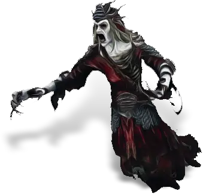
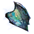
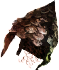
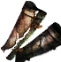
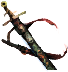

Открыть в интерактивной вики →

| Уровень | лёгк. 175 / норм. 175 / тяжел. 215 |
|---|---|
| Зоны атаки | ближняя, дальняя, ментальная |
| Шанс дропа 100% — уровни | лёгк. 1-125 / норм. 1-125 / тяжел. 140+ |
| Шанс дропа 90% — уровни | 126+ |
| Шанс дропа 70% — уровни | -- |
| Группа боссов | Ужас |
| Сила (PvE) | норм. 23 479 / тяжел. 31 795 |
| Аспект арены | Yantrei |
| Здоровье | лёгк. 495 000 / норм. 495 000 / тяжел. 625 000 |
| Мана | 20 000 |
| Выносливость | 20 000 |
Локация
- Кладбище в горах
- Кладбище Селены
Команда

Навыки


Дроп
 Андилунировый ингибитор
Андилунировый ингибитор  Платиновый ингибитор
Платиновый ингибитор 
Осколок Эссенция
Эссенция  Ворлинский Дукат
Ворлинский Дукат  Глиф Подмастерья
Глиф Подмастерья 
 Путь ужаса
Путь ужаса 


 V-IX
V-IX  Гроссмейстерский глиф
Гроссмейстерский глиф  Даймонит 750
Даймонит 750 | Рары | Синергетики | Эпики | |||
 Рары Рары  Рары Рары  Рары Рары  Рары Рары  Рары Рары  Рары Рары | 80-100 ур. |  Эпики Эпики | |||
Прочее:  Ворлинский Дукат Ворлинский Дукат  Эссенция Эссенция  Осколок Осколок  Глиф Подмастерья Глиф Подмастерья  Путь ужаса Путь ужаса | |||||
Требования для входа
все сложности: Вход раз в неделю один на каждом уровне сложности.  Останки Халигардийца ×1
Останки Халигардийца ×1  Кости Халигардийца ×1
Кости Халигардийца ×1  Рука Халигардийца ×1
Рука Халигардийца ×1  Череп Халигардийца ×1
Череп Халигардийца ×1  Древнехалигардийский нагрудник ×1
Древнехалигардийский нагрудник ×1
тяжел.:Путь ужаса
Останки Халигардийца ×1 Кости Халигардийца ×1 Рука Халигардийца ×1 Череп Халигардийца ×1 
Древнехалигардийский шишак ×1
Древнехалигардийские наголенники ×1
Древнехалигардийский меч ×1Древнехалигардийский нагрудник ×1тяжел.:
Путь ужасаПуть по картам
Умения
- Кража выносливости — замораживание
- Звуковая волна — удара тени
- Аура Ужаса — массовая аура холода удар в живот отупление энергетическая игла булавка в глаз явление смерти отравление
Иммунитеты / особые умения
Неуязвимость
Устойчивость перед лицом смерти